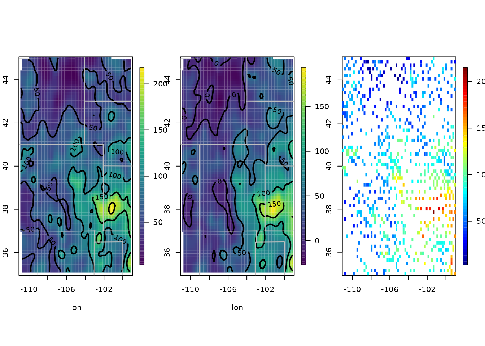
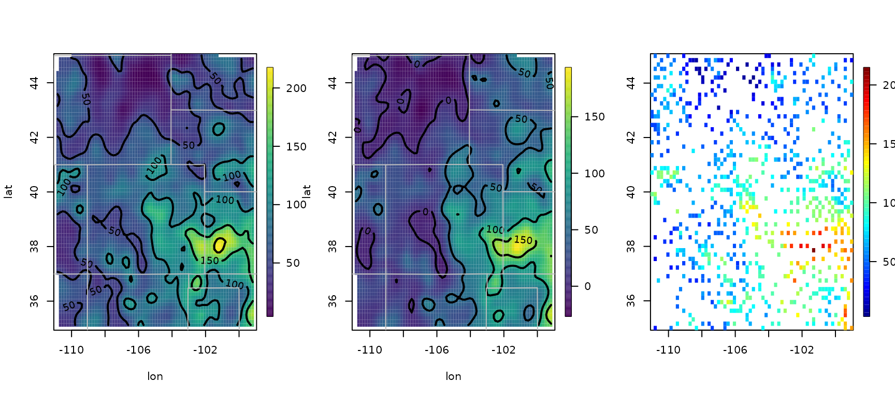
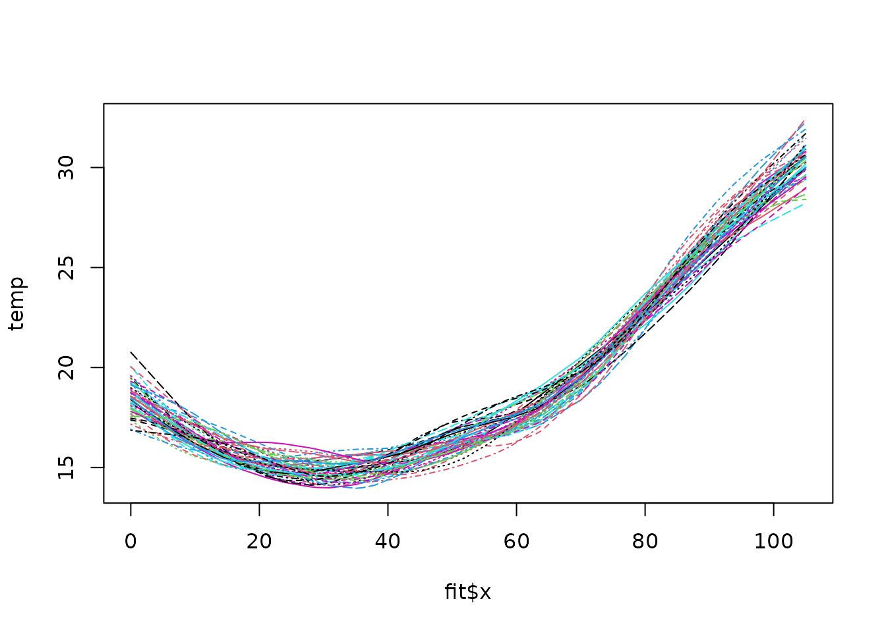

library(fields)
#> Loading required package: spam
#> Spam version 2.9-1 (2022-08-07) is loaded.
#> Type 'help( Spam)' or 'demo( spam)' for a short introduction
#> and overview of this package.
#> Help for individual functions is also obtained by adding the
#> suffix '.spam' to the function name, e.g. 'help( chol.spam)'.
#>
#> Attaching package: 'spam'
#> The following objects are masked from 'package:base':
#>
#> backsolve, forwardsolve
#> Loading required package: viridis
#> Loading required package: viridisLite
#>
#> Try help(fields) to get started.1. Tps
1.1. First
# 2-d example
fit <- Tps(ChicagoO3$x, ChicagoO3$y) # fits a surface to ozone measurements.
set.panel(2, 2)
#> plot window will lay out plots in a 2 by 2 matrix
plot(fit) # four diagnostic plots of fit and residuals.
set.panel()
#> plot window will lay out plots in a 1 by 1 matrix
# summary of fit and estiamtes of lambda the smoothing parameter
summary(fit)
#> CALL:
#> Tps(x = ChicagoO3$x, Y = ChicagoO3$y)
#>
#> Number of Observations: 20
#> Number of unique points: 20
#> Number of parameters in the null space 3
#> Parameters for fixed spatial drift 3
#> Effective degrees of freedom: 4.5
#> Residual degrees of freedom: 15.5
#> MLE tau 3.779
#> GCV tau 4.073
#> MLE sigma 347.7
#> Scale passed for covariance (sigma) <NA>
#> Scale passed for nugget (tau^2) <NA>
#> Smoothing parameter lambda 0.04107
#>
#> Residual Summary:
#> min 1st Q median 3rd Q max
#> -6.8060 -1.4390 -0.5064 1.4440 7.7890
#>
#> Covariance Model: Rad.cov
#> Names of non-default covariance arguments:
#> p
#>
#> DETAILS ON SMOOTHING PARAMETER:
#> Method used: GCV Cost: 1
#> lambda trA GCV GCV.one GCV.model tauHat
#> 0.04107 4.50304 21.40938 21.40938 NA 4.07296
#>
#> Summary of all estimates found for lambda
#> lambda trA GCV tauHat -lnLike Prof converge
#> GCV 0.04107 4.503 21.41 4.073 49.00 5
#> GCV.model NA NA NA NA NA NA
#> GCV.one 0.04107 4.503 21.41 4.073 NA 5
#> RMSE NA NA NA NA NA NA
#> pure error NA NA NA NA NA NA
#> REML 0.02972 4.886 21.49 4.030 48.98 4
surface(fit) # Quick image/contour plot of GCV surface.
# NOTE: the predict function is quite flexible:
look <- predict(fit, lambda = 2.0)
# evaluates the estimate at lambda =2.0 _not_ the GCV estimate
# it does so very efficiently from the Krig fit object.
look <- predict(fit, df = 7.5)
# evaluates the estimate at the lambda values such that
# the effective degrees of freedom is 7.5compare this to fitting a thin plate spline with lambda chosen so that there are 7.5 effective degrees of freedom in estimate.
# Note that the GCV function is still computed and minimized
# but the lambda values used correpsonds to 7.5 df.
fit1 <- Tps(ChicagoO3$x, ChicagoO3$y, df = 7.5)
set.panel(2, 2)
#> plot window will lay out plots in a 2 by 2 matrix
plot(fit1) # four diagnostic plots of fit and residuals.
# GCV function (lower left) has vertical line at 7.5 df.
set.panel()
#> plot window will lay out plots in a 1 by 1 matrix
# The basic matrix decompositions are the same for
# both fit and fit1 objects.
# predict( fit1) is the same as predict( fit, df=7.5)
# predict( fit1, lambda= fit$lambda) is the same as predict(fit)
# predict onto a grid that matches the ranges of the data.
out.p <- predictSurface(fit)
image(out.p)
# the surface function (e.g. surface( fit)) essentially combines
# the two steps above
# predict at different effective number of parameters
out.p <- predictSurface(fit, df = 10)1.2. Second
## Not run:
# predicting on a grid along with a covariate
data(COmonthlyMet)
# predicting average daily minimum temps for spring in Colorado
# NOTE to create an 4km elevation grid:
# data(PRISMelevation); CO.elev1 <- crop.image(PRISMelevation, CO.loc )
# then use same grid for the predictions: CO.Grid1<- CO.elev1[c("x","y")]
obj <- Tps(CO.loc, CO.tmin.MAM.climate, Z = CO.elev)
out.p <- predictSurface(obj,
CO.Grid,
ZGrid = CO.elevGrid
)
imagePlot(out.p)
US(add = TRUE, col = "grey")
contour(CO.elevGrid, add = TRUE, levels = c(2000), col = "black")
## End(Not run)
## Not run:
# A 1-d example with confidence intervals
out <- Tps(rat.diet$t, rat.diet$trt) # lambda found by GCV
out
#> Call:
#> Tps(x = rat.diet$t, Y = rat.diet$trt)
#>
#> Number of Observations: 39
#> Number of parameters in the null space 2
#> Parameters for fixed spatial drift 2
#> Model degrees of freedom: 7.5
#> Residual degrees of freedom: 31.5
#> GCV estimate for tau: 1.387
#> MLE for tau: 1.321
#> MLE for sigma: 4695
#> lambda 0.00037
#> User supplied sigma NA
#> User supplied tau^2 NA
#> Summary of estimates:
#> lambda trA GCV tauHat -lnLike Prof converge
#> GCV 0.0003714897 7.460039 2.377626 1.386660 71.06878 2
#> GCV.model NA NA NA NA NA NA
#> GCV.one 0.0003714897 7.460039 2.377626 1.386660 NA 2
#> RMSE NA NA NA NA NA NA
#> pure error NA NA NA NA NA NA
#> REML 0.0008674536 6.236239 2.404436 1.421252 70.76618 6
plot(out$x, out$y)
xgrid <- seq(min(out$x), max(out$x), , 100)
fhat <- predict(out, xgrid)
lines(xgrid, fhat, )
SE <- predictSE(out, xgrid)
lines(xgrid, fhat + 1.96 * SE, col = "red", lty = 2)
lines(xgrid, fhat - 1.96 * SE, col = "red", lty = 2)
#
# compare to the ( much faster) B spline algorithm
# sreg(rat.diet$t, rat.diet$trt)
# Here is a 1-d example with 95 percent CIs where sreg would not
# work:
# sreg would give the right estimate here but not the right CI's
x <- seq(0, 1, , 8)
y <- sin(3 * x)
out <- Tps(x, y) # lambda found by GCV
#> Warning:
#> Grid searches over lambda (nugget and sill variances) with minima at the endpoints:
#> (GCV) Generalized Cross-Validation
#> minimum at right endpoint lambda = 1.701355e-05 (eff. df= 7.600005 )
plot(out$x, out$y)
xgrid <- seq(min(out$x), max(out$x), , 100)
fhat <- predict(out, xgrid)
lines(xgrid, fhat, lwd = 2)
SE <- predictSE(out, xgrid)
lines(xgrid, fhat + 1.96 * SE, col = "red", lty = 2)
lines(xgrid, fhat - 1.96 * SE, col = "red", lty = 2)
## End(Not run)
# More involved example adding a covariate to the fixed part of model
## Not run:
set.panel(1, 3)
#> plot window will lay out plots in a 1 by 3 matrix
# without elevation covariate
out0 <- Tps(RMprecip$x, RMprecip$y)
surface(out0)
US(add = TRUE, col = "grey")
# with elevation covariate
out <- Tps(RMprecip$x, RMprecip$y, Z = RMprecip$elev)
# NOTE: out$d[4] is the estimated elevation coefficient
# it is easy to get the smooth surface separate from the elevation.
out.p <- predictSurface(out, drop.Z = TRUE)
surface(out.p)
US(add = TRUE, col = "grey")
# and if the estimate is of high resolution and you get by with
# a simple discretizing -- does not work in this case!
quilt.plot(out$x, out$fitted.values)
1.3. Third
# the exact way to do this is evaluate the estimate
# on a grid where you also have elevations
# An elevation DEM from the PRISM climate data product (4km resolution)
data(RMelevation)
grid.list <- list(x = RMelevation$x, y = RMelevation$y)
fit.full <- predictSurface(out, grid.list, ZGrid = RMelevation)
# this is the linear fixed part of the second spatial model:
# lon,lat and elevation
fit.fixed <- predictSurface(out, grid.list,
just.fixed = TRUE,
ZGrid = RMelevation
)
# This is the smooth part but also with the linear lon lat terms.
fit.smooth <- predictSurface(out, grid.list, drop.Z = TRUE)
#
set.panel(3, 1)
#> plot window will lay out plots in a 3 by 1 matrix
fit0 <- predictSurface(out0, grid.list)
image.plot(fit0)
title(" first spatial model (w/o elevation)")
image.plot(fit.fixed)
title(" fixed part of second model (lon,lat,elev linear model)")
US(add = TRUE)
image.plot(fit.full)
title("full prediction second model")
set.panel()
#> plot window will lay out plots in a 1 by 1 matrix
## End(Not run)2. Fast Tps
# m=2 p= 2m-d= 2
#
# Note: aRange = 3 degrees is a very generous taper range.
# Use some trial aRange value with rdist.nearest to determine a
# a useful taper. Some empirical studies suggest that in the
# interpolation case in 2 d the taper should be large enough to
# about 20 non zero nearest neighbors for every location.
out2 <- fastTps(RMprecip$x, RMprecip$y,
m = 2, aRange = 3.0,
profileLambda = FALSE
)
# note that fastTps produces a object of classes spatialProcess and mKrig
# so one can use all the
# the overloaded functions that are defined for these classes.
# predict, predictSE, plot, sim.spatialProcess
# summary of what happened note estimate of effective degrees of
# freedom
# profiling on lambda has been turned off to make this run quickly
# but it is suggested that one examines the the profile likelihood over lambda
print(out2)
#> CALL:
#> fastTps(x = RMprecip$x, Y = RMprecip$y, m = 2, aRange = 3, profileLambda = FALSE)
#>
#> SUMMARY OF MODEL FIT:
#>
#> Number of Observations: 806
#> Degree of polynomial in fixed part: 1
#> Total number of parameters in fixed part: 3
#> sigma Process stan. dev: 22.53
#> tau Nugget stan. dev: 25.99
#> lambda tau^2/sigma^2: 1.33
#> aRange parameter (in units of distance): 3
#> Approx. degrees of freedom for curve 111.5
#> Standard Error of df estimate: 2.704
#> log Likelihood: -3871.12060412435
#> log Likelihood REML: -3879.17851011222
#>
#> ESTIMATED COEFFICIENTS FOR FIXED PART:
#>
#> estimate SE pValue
#> d1 756.400 106.5000 1.202e-12
#> d2 4.425 0.9369 2.317e-06
#> d3 -5.471 1.1070 7.698e-07
#>
#> COVARIANCE MODEL: wendland.cov
#> Non-default covariance arguments and their values
#> k :
#> [1] 2
#> Dist.args :
#> $method
#> [1] "euclidean"
#>
#> aRange :
#> [1] 3
#> Nonzero entries in covariance matrix 119816
#>
#> SUMMARY FROM Max. Likelihood ESTIMATION:
#> Parameters found from optim:
#> lambda
#> 1.330438
#> Approx. confidence intervals for MLE(s)
#> lower95% upper95%
#> lambda 0.9586872 1.846342
#>
#> Note: MLEs for tau and sigma found analytically from lambda
#>
#> Summary from estimation:
#> lnProfileLike.FULL lnProfileREML.FULL lnLike.FULL lnREML.FULL
#> -3871.120604 -3879.178510 NA NA
#> lambda tau sigma2 aRange
#> 1.330438 25.991494 507.771046 3.000000
#> eff.df GCV
#> 111.486783 787.182674
## Not run:
set.panel(1, 2)
#> plot window will lay out plots in a 1 by 2 matrix
surface(out2)
# now use great circle distance for this smooth
# Here "aRange" for the taper support is the great circle distance in degrees latitude.
# Typically for data analysis it more convenient to think in degrees. A degree of
# latitude is about 68 miles (111 km).
fastTps(RMprecip$x, RMprecip$y, m = 2, lon.lat = TRUE, aRange = 210) -> out3
print(out3) # note the effective degrees of freedom is different.
#> CALL:
#> fastTps(x = RMprecip$x, Y = RMprecip$y, m = 2, aRange = 210,
#> lon.lat = TRUE)
#>
#> SUMMARY OF MODEL FIT:
#>
#> Number of Observations: 806
#> Degree of polynomial in fixed part: 1
#> Total number of parameters in fixed part: 3
#> sigma Process stan. dev: 23.38
#> tau Nugget stan. dev: 26.25
#> lambda tau^2/sigma^2: 1.26
#> aRange parameter (in units of distance): 210
#> Approx. degrees of freedom for curve 93.52
#> Standard Error of df estimate: 3.075
#> log Likelihood: -3869.75983890003
#> log Likelihood REML: -3877.51050412707
#>
#> ESTIMATED COEFFICIENTS FOR FIXED PART:
#>
#> estimate SE pValue
#> d1 772.400 120.600 1.530e-10
#> d2 4.590 1.058 1.431e-05
#> d3 -5.431 1.279 2.182e-05
#>
#> COVARIANCE MODEL: wendland.cov
#> Non-default covariance arguments and their values
#> k :
#> [1] 2
#> Dist.args :
#> $method
#> [1] "greatcircle"
#>
#> aRange :
#> [1] 210
#> Nonzero entries in covariance matrix 152398
#>
#> SUMMARY FROM Max. Likelihood ESTIMATION:
#> Parameters found from optim:
#> lambda
#> 1.260473
#> Approx. confidence intervals for MLE(s)
#> lower95% upper95%
#> lambda 0.8798356 1.805784
#>
#> Note: MLEs for tau and sigma found analytically from lambda
#>
#> Summary from estimation:
#> lnProfileLike.FULL lnProfileREML.FULL lnLike.FULL lnREML.FULL
#> -3869.759839 -3877.510504 NA NA
#> lambda tau sigma2 aRange
#> 1.260473 26.247003 546.544737 210.000000
#> eff.df GCV
#> 93.523726 778.959697
surface(out3)
set.panel()
#> plot window will lay out plots in a 1 by 1 matrix
## End(Not run)
## Not run:
# simulation reusing Tps/Krig object
fit <- Tps(rat.diet$t, rat.diet$trt)
true <- fit$fitted.values
N <- length(fit$y)
temp <- matrix(NA, ncol = 50, nrow = N)
tau <- fit$tauHat.GCV
for (k in 1:50) {
ysim <- true + tau * rnorm(N)
temp[, k] <- predict(fit, y = ysim)
}
matplot(fit$x, temp, type = "l")
## End(Not run)